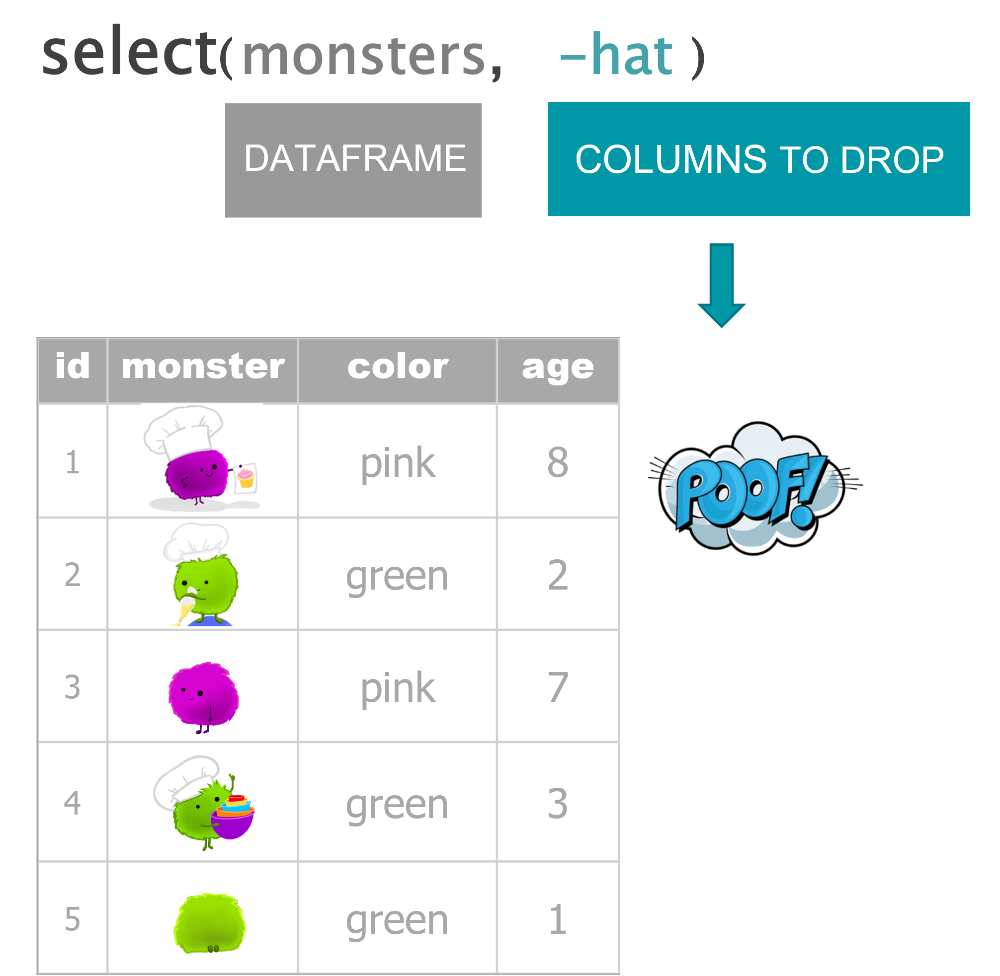
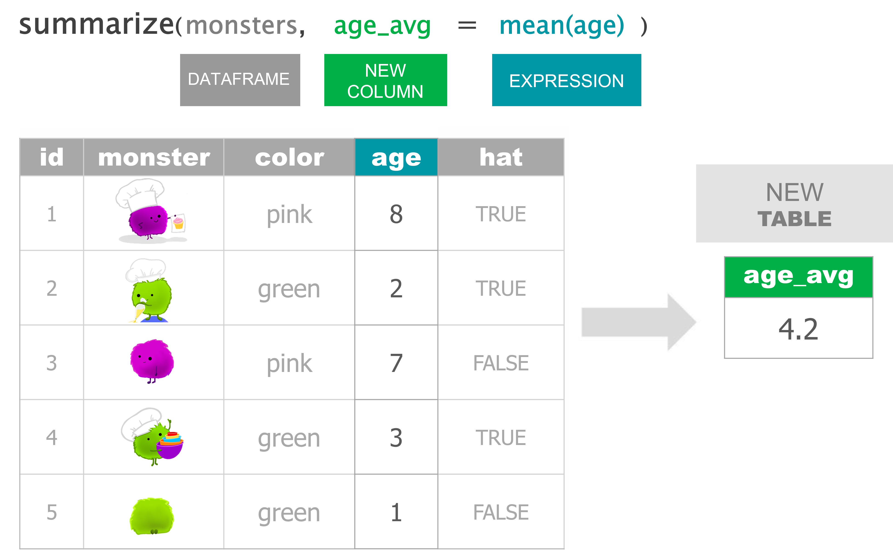

1 Data wrangling
WRANGLE that DATA
Artwork by @allison_horst
Your data toolbox
| Function | Job |
|---|---|
filter()
|
Keep rows that pass your tests |
select()
|
Select columns to keep or drop |
arrange()
|
Sort a table based on a column’s values |
mutate()
|
Add new columns or update existing columns |
Monsters are back

Filter with a single condition / test

Filter with multiple conditions / tests

Keep columns

Drop columns

Arrange from lowest to highest

Arrange from highest to lowest
Update an existing column

Add a new column

# Create monsters
monsters <- data.frame(id = 1:5,
color = c("pink", "green", "pink", "green", "green"),
age = c(8,2,7,3,1),
hat = c(T,T,F,T,F) )
# FILTER ----
## Use a single condition/test
filter(monsters, color == "pink")
## Use multiple conditions/tests
filter(monsters, color == "pink", age > 7)
# SELECT ----
## Keep only 2 columns
select(monsters, id, age)
## Drop columns with a '-' in front
select(monsters, -hat)
# ARRANGE ----
## From low to high
arrange(monsters, age)
## Descend from high to low
arrange(monsters, desc(age))
# MUTATE ----
## Update an existing column
mutate(monsters, age = age + 2)
## Create a new column
mutate(monsters, is_baby = age < 3)Our first order
To:Bot Bakery
Subject:Big treat order
Attached:crew_food_prefs.xlsx
Hi friend,
Here‚Äôs the table of my crew‚Äôs goody preferences. üòã
Guess which crewmate is me!
Get the data
We can download the attached Excel file HERE
After you’ve downloaded the file, move the file from your Downloads/ folder to a data/ folder in your project’s main directory:
- Download the Excel file
- Create a “data” folder in your project directory
- You can do this the usual way with Windows Explorer, or use the built-in New Folder button in the RStudio
Filespane.
- Move the Excel file from your Downloads/ folder to the new data/ folder.
Excel in R
Have an EXCEL file? The readxl package has the function read_excel() for reading Excel data into R.
Let’s install and load readxl:
Now we can read in our Excel file:
Ope! What happened to our column names / headers?
Having troubles loading the data? Here is an identical CSV version to load so you can carry on.
An Excellent alternative
filter() to rows with missing values or NA’s
Use filter() to view the rows where nut_allergy is missing or is NA.
filter() out the test data
There appears to be test data included in the table. Yuk! Let’s filter it out so it doesn’t influence our results.
select() what we need
Let’s create a separate smaller favorites dataframe with only the id and favorite_goody columns.
Let’s create a separate allergy table with only the id and all of the columns that contain the word “allergy”.
There’s also some columns in here we don’t need. Let’s drop the country people are from since that won’t help us at the moment.
Finally, for easier reference, use select() to make the id and days_on_ship columns the first two columns in the table. Everything else can be in the same order.
arrange() the crew
Let’s use arrange() to sort the crew members so the ones that will be on the ship the longest are on top. They’ll be the ones munching on are goodies the longest.
Ope! What happened?
mutate() new columns
Let’s get an idea of the total meals each crew mate will be eating our baked goods. For that, we’ll need to take their days_on_the_ship and multiply it by their meals_per_day.
2 Forks in the road: if_else + case_when
if_else( )
Monster bakers
Hat check
If the monster is wearing a hat (the hat column is TRUE), then they are definitely a baker. Otherwise they are not a baker.
The if_else() statement
Assign the result to a new column named “job”
Use mutate() to add the column to the monster data
Baby check: Age comparison
The if_else() statement
Assign the result to a new column named “life_stage”
Use mutate() to add the column to the monster data
What if we have more than 2 categories we want to assign things to? Say we wanted to sort the monsters into babies, kids, and adults?
case_when( )
What to wear
The footwear we choose to wear depends on our activity. If we are running we may choose sneakers. If we are swimming we may choose flippers. And in this case, when we aren’t running or swimming we will be wearing slippers. The final TRUE option in case_when will be used as the default choice when none of the other options above it are true.
Back to monster babies
This if_else() statement
Turns into this case_when() statement
Now we can add more life stages
Add a “Kid” option
Set the default option to “Adult”
Use mutate() to add the column to the monster data
The pipe: “Take this and then…”

Patty cake
Read as:
Take a patty cake (and then)
roll it (and then)
prick it (and then)
mark it - with the letter “B”.
Short trip, Long trip
if_else()
library(tidyverse)
days_on_ship <- 5
if_else(days_on_ship <= 7, "Short trip")
# ERROR: What did we forget?
if_else(days_on_ship <= 7, "Short trip", "Long trip")
time_onboard = if_else(days_on_ship <= 7, "Short trip", "Long trip")
case_when()
case_when(days_on_ship <= 7 ~ "Short trip",
days_on_ship <= 14 ~ "Long trip",
TRUE ~ "A very long trip")
# Run again with a new value
days_on_ship <- 15
case_when(days_on_ship <= 7 ~ "Short trip",
days_on_ship <= 14 ~ "Long trip",
TRUE ~ "A very long trip")Add columns to the
crew_dfdata
Regions
Let’s assign some countries to North America. We can use the %in% operator to check if a value is in a list. Below, we’ll check if a given country is in a list of some of the countries in North America. If it is in the list, we’ll give the region a value of "North America". But if it isn’t in the list, we’ll label the region as "Other".
crew_df <- read_csv("https://tidy-mn.github.io/R-camp-penguins/data/crew_food_prefs.csv")
# The if_else statement
country <- "Brazil"
if_else(country %in% c("United States", "Canada", "Mexico"),
"North America",
"Other")
# Use mutate to add the region column
crew_df <- crew_df %>%
mutate(region = if_else(country %in% c("United States", "Canada", "Mexico"),
"North America",
"Other"))Cocoa powder shortage
Uh-oh. Our cocoa is running low. We need to identify the goodies that include cocoa powder. Similar to the previous example, let’s use %in% to check if a person’s favorite_goody is in a list of chocolate goodies and flag them as needing cocoa.
# The if_else statement
favorite_goody <- "brownies"
if_else(favorite_goody %in% c("brownies", "chocolate croissant"),
"Needs cocoa",
"No cocoa")
# Use mutate to add the column cocoa_check
crew_df <- crew_df %>%
mutate(cocoa_check = if_else(favorite_goody %in% c("brownies",
"chocolate croissant"),
"Needs cocoa",
"No cocoa"))3 Simmer it down: Summarize the data
Your EXPANDED data toolbox
| Function | Job |
|---|---|
filter()
|
Keep rows that pass your tests |
select()
|
Select columns to keep or drop |
arrange()
|
Sort a table based on a column’s values |
mutate()
|
Add new columns or update existing columns |
summarize()
|
Get summary statistics for an entire table |
group_by()
|
Group data for group specific summaries |
A MONSTER summary
Time to simmer things down. Let’s use summarize() to find a few summary statistics for our data.
Filter with a single condition / test
Filter with multiple conditions / tests
Keep columns
Drop columns
Arrange from lowest to highest
Arrange from highest to lowest
Update an existing column
Add a new column
Average age

Average age by monster color type

Average age and monster count by color


# Create monsters
monsters <- data.frame(id = 1:5,
color = c("pink", "green", "pink", "green", "green"),
age = c(8,2,7,3,1),
hat = c(T,T,F,T,F) )
# FILTER ----
## Use a single condition/test
monsters %>% filter(color == "pink")
## Use multiple conditions/tests
monsters %>% filter(color == "pink", age > 7)
# SELECT ----
## Keep only 2 columns
monsters %>% select(id, age)
## Drop columns with a '-' in front
monsters %>% select(-hat)
# ARRANGE ----
## From low to high
monsters %>% arrange(age)
## Descend from high to low
monsters %>% arrange(desc(age))
# MUTATE ----
## Update an existing column
monsters %>% mutate(age = age + 2)
## Create a new column
monsters %>% mutate(is_baby = age < 3)
# SUMMARIZE ----
monsters %>% summarize(age_avg = mean(age))
# GROUP_BY ----
## Create a single summary statistic
monsters %>%
group_by(color) %>%
summarize(age_avg = mean(age))
## Create multiple summary stats
monsters %>%
group_by(color) %>%
summarize(age_avg = mean(age),
n_monsters = n())Crew examples
Load the data
library(tidyverse)
crew_df <- read_csv("https://tidy-mn.github.io/R-camp-penguins/data/crew_food_prefs.csv")
# Drop the test row
crew_df <- crew_df %>% filter(id != "test")
summarize()
## # A tibble: 1 × 1
## days_avg
## <dbl>
## 1 19.7
group_by()%>%summarize()
# Average days on ship grouped by nut allergy column
crew_df %>%
group_by(nut_allergy) %>%
summarize(days_avg = mean(days_on_the_ship))## # A tibble: 2 × 2
## nut_allergy days_avg
## <lgl> <dbl>
## 1 FALSE 20
## 2 TRUE 19.7
mutate()%>%group_by()%>%summarize()
Which goody will be most in demand on the ship?
# Add a total meals column
## And then group by goody type and sum the total meals
crew_df %>%
mutate(total_meals = meals_per_day * days_on_the_ship) %>%
group_by(favorite_goody) %>%
summarize(goody_total_meals = sum(total_meals))
# Arrange total goody meals in descending order
crew_df %>%
mutate(total_meals = meals_per_day * days_on_the_ship) %>%
group_by(favorite_goody) %>%
summarize(goody_total_meals = sum(total_meals)) %>%
arrange(desc(goody_total_meals))Bonus
How many crew are from each country? How many crew voted for each goody for their favorite?
# Crew count for each country
crew_df %>%
group_by(country) %>%
summarize(n_crew = n())
# Most popular goody
crew_df %>%
group_by(favorite_goody) %>%
summarize(n_favorites = n())Alternative:
count()
# Crew count for each country
count(crew_df, country)
crew_df %>% count(country)
# Most popular goody
crew_df %>% count(favorite_goody)